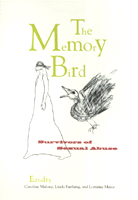

<body bgcolor="#FFFFFF" text="#000000" link="#0000FF" vlink="#CC0000" alink="#CC0000"><center><hr width="350" size="1" align="center" noshade>The moving voices of survivors of childhood sexual abuse evoke the process of feeling pain, remembering, and healing the wounds of the past<hr width="350" size="1" align="center" noshade><p><a href="https://cdcshoppingcart.uchicago.edu/Cart/ChicagoBook.aspx?ISBN=9781566395250&&PRESS=temple" target="_top">Buy this book!</a> | <a href="https://cdcshoppingcart.uchicago.edu/Cart/Cart.aspx?PRESS=temple" target="_top">View Cart</a> | <a href="https://cdcshoppingcart.uchicago.edu/Cart/Cart.aspx?PRESS=temple" target="_top">Check Out</a></p><p></p></center><!--none//--><h1>The Memory Bird</h1>
<H2>Survivors of Sexual Abuse</H2>
<h3>edited by Caroline Malone, Linda Farthing and Lorraine Marce</h3>
<P>cloth 1-56639-525-9 $72.50, Mar 97, <FONT COLOR=#990033>Out of Stock Unavailable</FONT>
<br>paper 1-56639-526-7 $19.95, Mar 97, <FONT COLOR=#990033>Out of Stock Unavailable</FONT>
<BR> 295 pp
5.5x8.25
15&nbsp;figures 9&nbsp;halftones
<BR>&nbsp;<br>Restricted: U.S. and Philippines only
</P><p>This book is a collection of drawings, personal essays, letters, poems, and journal entries created primarily by women, but also by some men who have recovered or are recovering from the emotional effects of childhood sexual abuse. They write about their experience of abuse by fathers, brothers, other relatives, and people outside the family.
<p>The contributors offer a wide range of experiences ranging from the process of remembering and dealing with pain to the use of creative expression as a means to begin healing. The passages reveal anger and shame, full of the struggle to break the silence, and to act to restore oneself. Chapter titles like "The Survivor's Song," "Claiming the Right to Feel Pain," "Can You Hear Me?" and "Learning to Dance," define the emotions and stages many survivors share. A chapter called "You Want a Witness?" consists of recovered memories and helpful comments on False Memory Syndrome. Each chapter has a brief, accessible introduction by the editors.
<BR>&nbsp;<h2>Excerpt</h2><P>Excerpt available at <a href="http://www.temple.edu/tempress">www.temple.edu/tempress</a></p>
<BR>&nbsp;<h2>Contents</h2><P>
<p>Acknowledgments
<br>Introduction
<br>1. The blades of my life
<br>2. The survivor�s song
<br>3. Claiming the right to feel pain
<br>4. Pulling things from a dark cupboard
<br>5. Can you hear me?
<br>6. Turned on a tide
<br>7. Learning to dance
<br>8. Eating the coal
<br>9. You want a witness?
<br>10. Us!
</P><BR>&nbsp;<H2>About the Author(s)</H2>
<P><B>Caroline Malone</B> founded a self-help network for survivors of sexual abuse in 1989 that continues to be successful today. She is very involved in the survivor movement and active in the arts.</P>
<P><B>Linda Farthing </B>has worked in family therapy for 17 years treating both children and adult victims of sexual abuse. She manages a large family therapy center.</P>
<P><B>Lorraine Marce </B>lectures in social psychology and runs a workshop on the psychological aspects of sexual abuse. She has been actively involved in promoting and lobbying for the social, political, and legal rights of children.</P>
<BR><H2>Subject Categories</H2>
<p><A HREF="/tempress/women.html" TARGET="_top">Women's Studies</a>
<BR><A HREF="/tempress/psycho.html" TARGET="_top">Psychology</a>
</p>
<p align="center"><a href="https://cdcshoppingcart.uchicago.edu/Cart/ChicagoBook.aspx?ISBN=9781566395250&&PRESS=temple" target="_top">Buy this book!</a> | <a href="https://cdcshoppingcart.uchicago.edu/Cart/Cart.aspx?PRESS=temple" target="_top">View Cart</a> | <a href="https://cdcshoppingcart.uchicago.edu/Cart/Cart.aspx?PRESS=temple" target="_top">Check Out</a></p><p><font face="Arial" size="1"><a href="copyright.html" onMouseOver="window.status='Web Copyright Policy';return true;" onMouseOut="window.status=''" title="Web Copyright Policy">&copy;</a> 2015 <a href="http://www.temple.edu" target="new" onMouseOver="window.status='Link to Temple University home page';return true;" onMouseOut="window.status=''" title="Link to Temple University home page">Temple University</a>. All Rights Reserved. http://www.temple.edu/tempress/titles/1371_reg.html</font></p>